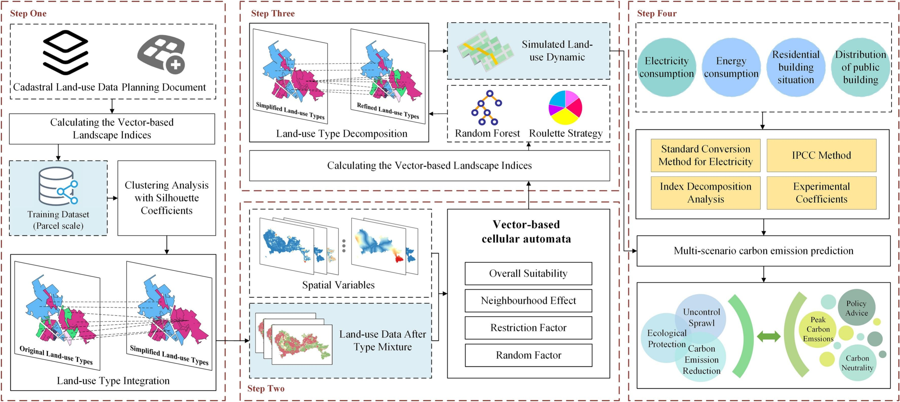
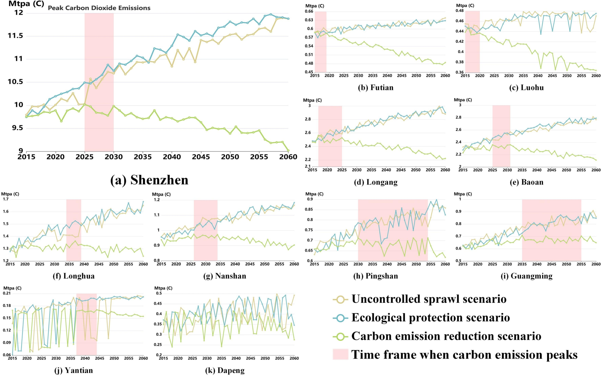
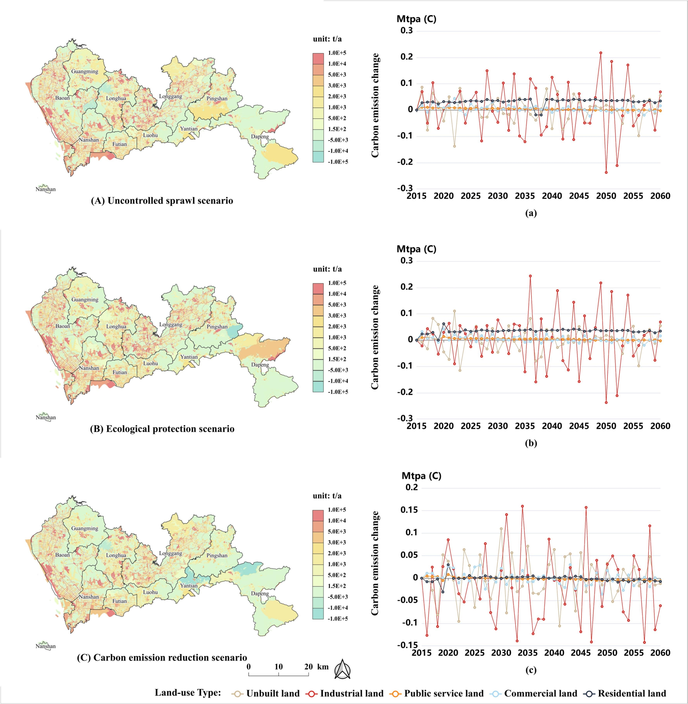

Forecasting carbon emissions is crucial for formulating environmental policies towards carbon peak and neutrality, yet it remains challenging in fine-scale carbon emission forecasting. One of the main challenges is the lack of fine-scale spatial carbon emission prediction methods. Another challenge lies in simulating carbon emissions under various policy scenarios. To address these issues, this study proposes a novel carbon emission forecasting model, CarbonVCA, by integrating a vector-based cellular automata (VCA) land-use change model with a cadastral parcel-level carbon emission estimation method. The proposed CarbonVCA model can forecast carbon emissions at the land parcel scale, as well as capture their spatio-temporal dynamics under various urban development strategies. We apply this model to simulate the spatio-temporal dynamics of carbon emissions in Shenzhen, China, from 2019 to 2060 under three distinct strategy scenarios: natural development, open-space protection, and carbon emission reduction. Our results indicate that the proposed model is capable of predicting fine-scale carbon emissions and capturing the spatio-temporal variations under different scenarios. We also discover the diverse patterns of carbon emissions driven by land-use changes under three strategies. These findings provide insights into achieving carbon peak and neutrality in Shenzhen and can serve as a reference for other cities.
Carbon emissions have become a critical challenge for global sustainable development, with 60 countries committed to net-zero emissions by 2050. China — the world's largest carbon emitter (≈10.3 Gt CO₂ in 2018, ~30% of global emissions) — pledged at the 2014 APEC meeting to peak carbon emissions around 2030. As energy-intensive industries continue shifting to Chinese cities, evaluating and forecasting urban carbon emissions has become vital for achieving this goal.
Existing models (LMDI, Kaya, IPCE, STIRPAT) operate at coarse national or regional scales using aggregated data, ignoring the spatial heterogeneity of carbon emissions within cities. Recent nighttime-light-based approaches still remain limited to 1–10 km resolution. This leads to one-size-fits-all management strategies lacking locally actionable guidance. A better approach requires recognizing that urban land-use dynamics are an essential but often neglected driver of carbon emission changes — and Vector-based Cellular Automata (VCA) models can model these dynamics at the cadastral parcel scale with high spatial precision.
To address two key deficiencies — the neglected role of land-use dynamics and insufficient spatial resolution — this paper proposes CarbonVCA, a bottom-up, cadastral parcel-scale carbon emission forecasting framework. Integrating VCA land-use simulation, a random forest classifier, and land-use-specific carbon emission coefficients, CarbonVCA enables fine-scale prediction of carbon emissions under multiple strategy scenarios. We validate CarbonVCA through a case study in Shenzhen, China (2019–2060), providing spatially explicit policy guidance for achieving carbon peak goals.
Shenzhen, Guangdong Province, is located in the Pearl River Delta in south China, covering 1,997.47 km² with nine administrative districts and one new district (Dapeng). As China's first special economic zone and a core city in the Guangdong-Hong Kong-Macao Bay Area, Shenzhen achieved a regional GDP of 2,767 billion RMB and a resident population of 17.56 million in 2020. However, rapid urbanisation has brought about vast challenges of resource shortage and environmental pollution, making it urgent to achieve the city's peak carbon emission and carbon-neutral targets.
Cadastral land-use data was obtained from the Shenzhen Municipal Bureau of Planning and Natural Resources, covering land-use types including public service, residential, commercial, industrial, and unbuilt land. Multi-source geographical data — including DEM, slope, road networks (railways, highways, urban streets), POI data (residential, recreational, medical, commercial, industrial facilities, bus stops, parklands) from OpenStreetMap and Amap — were used to calculate spatial driving factors for urban land-use change at a 30 m × 30 m resolution. Additionally, district-scale carbon emission inventories (2010 onward) from Shenzhen Statistical Yearbook and energy consumption monitoring reports were used for validation.
The CarbonVCA framework consists of four main steps, forming a bottom-up pipeline from simplified land-use simulation to cadastral parcel-scale carbon emission forecasting.

To improve VCA training efficiency and simulation accuracy, original land-use types with similar landscape patterns are integrated into simplified categories. 17 vector-based landscape indices (quantifying size, shape, diversity, and agglomeration of land parcels) and a clustering algorithm are applied to group similar types. Clustering quality is verified using the Silhouette Coefficient, ensuring compact and well-separated clusters before feeding them into the VCA model.
The VCA model mines land-use transformation rules by computing the overall suitability Pg for each land parcel, which integrates four components: overall suitability derived from driving factors (trained with random forest), the neighbourhood effect Ω, a restriction factor Pr, and a random factor RA. Cadastral data from 2009 and 2014 serve as the base map, and the model is validated by comparing the simulated 2014 result against ground truth using Figure of Merit (FoM) and confusion matrix metrics.
After VCA simulation, the simplified land-use categories are decomposed back into fine-grained types. A random forest classifier estimates the probability of each parcel belonging to each refined category, and a roulette strategy determines the final refined type. This step recovers detailed land-use composition, enabling more precise carbon emission estimation at the parcel level.
Cadastral parcel-scale carbon emissions are estimated using land-use-specific coefficients from multiple sources (IPCC guidelines, agricultural/forestry inventories, and energy-consumption-based methods for built-up land). Three strategy scenarios are designed:
Model accuracy was assessed at the district scale using Mean Absolute Percentage Error (MAPE) and Root Mean Square Error (RMSE). The predicted carbon emissions from 2015 to 2017 were compared against Shenzhen's district-scale carbon emission inventories as ground truth, aggregated to the 2010 administrative boundaries to ensure consistency.
The VCA model was trained on 2009 data and validated against 2014 ground truth, achieving an overall accuracy where UA (User's Accuracy) exceeded 0.38 for all land-use types. Figure of Merit (FoM) and confusion matrix metrics confirmed that the VCA model reliably captures the spatio-temporal evolution of land parcels in Shenzhen, providing a solid foundation for subsequent carbon emission forecasting.
The predicted district-scale carbon emissions (2015–2017) were compared against ground truth inventories, achieving a high overall fitting accuracy (MAPE = 19.017%, RMSE = 0.175 Mtpa C). Baoan, Longgang, Nanshan, and Luohu districts achieved high fitting accuracy, while Futian and Yantian had moderate accuracy. The average MAPE in the coastal zone of Nanshan, eastern Luohu, and central Longgang reached 9.481%, and the average MAPE for each district was 21.919%, demonstrating the model's ability to produce reliable carbon emission estimates at fine spatial scales.
Under Scenarios I and II, only Luohu and Yantian districts are estimated to reach carbon peak by around 2035, while the rest of the city continues experiencing growing or fluctuating emissions. Scenario II, despite leading to more resource aggregation, cannot significantly reduce overall carbon emissions.

Under Scenario III, all districts in Shenzhen can achieve peak carbon emissions by around 2025–2030. Futian, Luohu, and Longgang districts show the fastest emission decline, benefiting from their administrative, cultural, financial, and high-tech advantages. In contrast, Yantian and Dapeng districts experience significant emission oscillations due to rapid recent urbanisation and changing land-use spatial distributions. Under Scenario III, industrial land and unbuilt land show dramatic carbon emission changes, while residential and public service land change more steadily — suggesting that carbon reduction policies can ensure stable, green emissions from these land types.

The CarbonVCA model advances carbon emission forecasting in three key aspects. First, it is the first model to incorporate differences in carbon emissions across various detailed urban land-use types, moving beyond the coarse national, project, or organisational scales common in prior work. Second, it portrays the spatial heterogeneity of carbon emissions at the cadastral parcel scale — a significant improvement over the square-kilometre resolution typical of earlier approaches — enabling precise ecological red-line delineation and tailored local policies. Third, it can predict future carbon emission dynamics under diverse strategy scenarios, directly estimating the potential impacts of various policies.
However, two limitations remain. First, low-carbon land-use types (forest, grassland, water) and their corresponding emission coefficients carry inherent uncertainty, as these land types cover large areas with small carbon coefficient values, which may cause errors in the land-use decomposition step. Second, the expansion of carbon emission trends relies on an empirical model with fixed annual decay rates, approximating the impact of emission reduction policies rather than modelling them mechanistically.
Practically, Scenario III intensifies competition between industrial land and unbuilt land for land transformation. We recommend that urban planners pay more attention to the scale and layout of future unbuilt land development and promote mixed-use, high-density land modes to improve land-use efficiency. Future work should focus on: (1) coupling multi-source data to better understand the influence mechanism between landscape features and fine land-use categories; (2) improving carbon emission estimation through field surveys to better capture electricity-consumption-carbon-emission relationships; and (3) incorporating green energy adoption and residents' low-carbon behaviours into additional policy scenarios.
This paper proposes CarbonVCA, a bottom-top framework for forecasting cadastral parcel-scale carbon emissions by integrating a VCA land-use change model with a carbon emission estimation method. The model was applied to Shenzhen (2019–2060) under three scenarios. The findings indicate that:
@article{yao2023carbonvca,
title={CarbonVCA: A cadastral parcel-scale carbon emission
forecasting framework for peak carbon emissions},
author={Yao, Yao and Sun, Zhenhui and Li, Linlong and
Cheng, Tao and Chen, Dongsheng and Zhou, Guangxiang and
Liu, Chenxi and Kou, Shihao and Chen, Ziheng and
Guan, Qingfeng},
journal={Cities},
volume={138},
pages={104354},
year={2023},
doi={10.1016/j.cities.2023.104354}
}